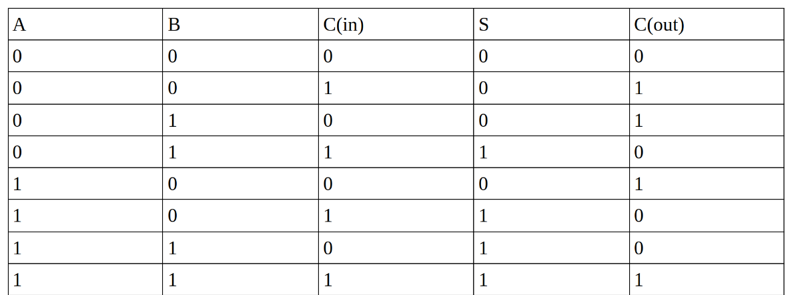

Verslag 2: Adders
Dit verslag werd opgesteld door:
-
Naam: CouldBeMathijs
-
Naam: Creation
Aantal man-uren besteed: 16 uur
Moeilijkheidsgraad: 6/10 (1 is heel makkelijk, 10 is heel moeilijk)
Inhoud van de oplossing
De oplossing bestaat uit de volgende bestanden:
Verslag
Opdracht 1:
Opdracht 1a:

We hebben de truth table ingevuld door steeds de waarden voor A, B en C te vervangen voor hun waarden in de tabel.
Opdracht 1b:


Opdracht 1c:


Opdracht 2:
Opdracht 2b/c:
We deden automatisch 2c, bij het doen van 2b, en hebben hier dus geen aparte screenshot van.


Opdracht 3:
Opdracht 3a:


Opdracht 3b:
We hadden bij 3a verkeerdelijk geïnterpreteerd dat het al een CLA moest zijn, dus is deze opdracht niet noodzakelijk. We hebben hiervoor toestemming gekregen van een assistant.
Opdracht 3c/d:


Opdracht 4:
Opdracht 4a:


Opdracht 4b - Latency:
-
Ripple adder:
- 1 bit adder: 2ε
- 12 1 bit adders aan elkaar gelinkt: 12 bit Ripple Adder = 12*2ε = 24ε
-
Carry lookahead adder:
- 1 bit adder: 2ε
- 4 bit CLA: 5ε voor som bits, 2ε voor superpropagate, 3ε voor supergenerate.
- 12 bit CLA: 3*4ε = 12ε, want je gaat steeds langs 2 gates na de superpropagate voor de langste weg.